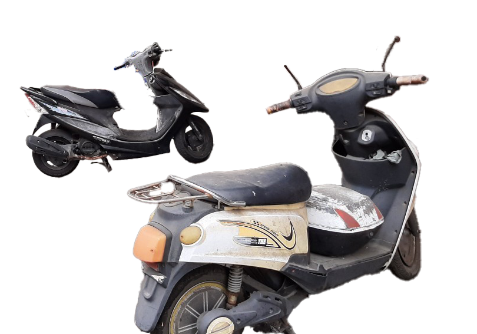
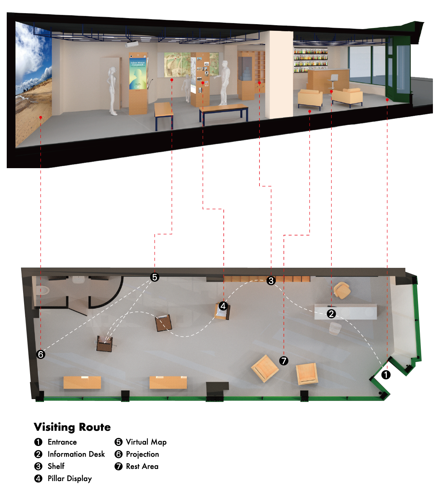
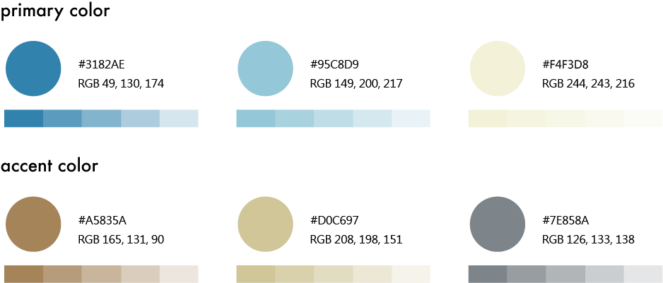

Longtan Walker Pace Counter APP
In Yunlin County's Douliu City, Longtan Road serves as a crucial transportation hub, but the persistent issue of chaotic street traffic has been a concern for pedestrians. To address this problem, my team and I developed an app to optimize the traffic conditions on Longtan Road.
- Identified traffic issues and their sources on Longtan Road.
- Implemented solutions to improve traffic conditions on Longtan Road.
- Provided long-term solutions for sustainable improvement.
- UX/UI Design
- Research and Synthesis
- Prototype
About Longtan Road
Longtan Road, near Yunlin University of Science and Technology, is mainly frequented by university students. The numerous affordable and delicious restaurants along this road attract a large student population. Daily meal times contribute to heavy congestion, impacting our daily lives as my team and I also frequent these establishments.
Field Research, User Interview
User Flow, Information Architecture
Wireframing, Prototype Presentation
Users Feedback
Through street interviews with students and businesses on Longtan Road, we found that traffic issues arise during mealtimes due to congestion, poor air quality, limited parking, and safety concerns, mainly caused by the high number of motorcycles. To alleviate these problems, reducing the number of motorcycles on Longtan Road is crucial.
To reduce the number of motorcycles on the road, we propose that students switch to walking on Longtan Road. To incentivize this change, we suggest offering discounts through a step-counting system. Students can accumulate steps to exchange for food discount vouchers, benefiting both students and businesses. This approach aims to address traffic issues successfully.
Visiting Route
Cultural Heritage Center is themed with a simple and natural style, aiming to provide visitors with a comfortable and well-lit space. Facilities include Pillar Display, Virtual Map, Exhibition Shelf, and Projection Wall, among others. These features allow for the flexibility to change exhibition content at any time, enhancing richness. The Rest Area is equipped with lounge chairs, providing travelers with a place to take a break.
Pilliar Display
The exhibition hall contains three pillars, each of them four-sided, a large LCD screen on a wall, a projection corner and a shelf. The visiting route brings the visitors from pillar to pillar. There is a mix of real objects, LCD screens, 3D models, pictures, maps and also a phone.

Smartphone App Concept
Finally, the experience extends to a smartphone app, guiding participants to explore outdoor attractions and creating a comprehensive itinerary for their visit.
